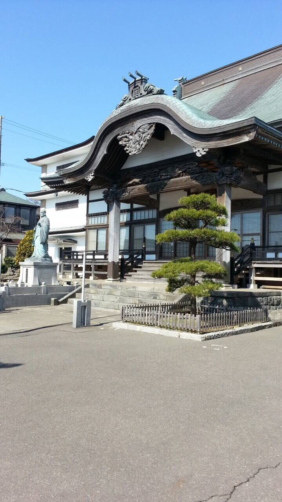

妙傳寺の歴史と歩み

感応山妙傳寺は、北海道室蘭市常盤町に所在する日蓮宗の寺院です。
当山は室蘭の地において、長きにわたり地域の皆様の信仰の拠り所として歩んでまいりました。法華経の教えのもと、先祖供養・各種祈祷・仏事全般を承り、皆様の心に寄り添い続けております。
どうぞお気軽にご参拝ください。
← 知るトップへ戻る皆様、いつも妙傳寺へのご参拝・ご支援を賜り、誠にありがとうございます。
当山住職としてこの地に立ち、日々感じるのは、人と人との縁の尊さ、そして仏法の深さです。どのような悩みを抱えたお方も、どうかこの寺の門をくぐり、ともに手を合わせていただければと思います。
「南無妙法蓮華経」のお題目を唱えることは、心を整え、日常に静けさをもたらします。仏事・ご相談はもちろん、何気ないお参りも大歓迎です。皆様のお越しを心よりお待ち申し上げております。
感応山 妙傳寺 住職
← 知るトップへ戻る日蓮宗は、鎌倉時代の僧・日蓮聖人（1222〜1282年）が開いた仏教宗派です。法華経（妙法蓮華経）をすべての仏教経典の根本と位置づけ、「南無妙法蓮華経」のお題目を唱えることを実践の中心としています。
日蓮聖人は、混乱した時代にあって、正しい法華経の教えによってのみ人も国も救われると説き続けました。その精神は現代においても受け継がれ、私たちの日々の生活に法華経の教えを活かすことを大切にしています。
お題目「南無妙法蓮華経」には、すべての命への感謝と、仏の知恵への帰依の意味が込められています。
← 知るトップへ戻る感応山妙傳寺の境内には、荘厳な本堂をはじめ、各守護神をお祀りする諸堂が立ち並びます。四季折々に異なる表情を見せる境内は、日々のお参りの場としてはもちろん、心を落ち着かせる静かな空間としてご利用いただけます。
ご参拝の際はどうぞ境内をゆっくりとご散策ください。
← 知るトップへ戻る当山には、様々なご利益をもたらす守護神様方がお祀りされています。
子育て・安産・家内安全のご利益で知られる女神。子を守る慈悲深い守護神として広く信仰されています。
商売繁盛・五穀豊穣・福徳のご利益をもたらす神様。笑顔と打ち出の小槌が象徴です。
雨や水を司る龍神の王。海上安全・雨乞い・諸願成就のご利益があるとされます。
母の慈愛のように人々を救う観音菩薩。水子供養・子授け・縁結びのご利益で信仰されます。
音楽・芸術・知恵・財運を司る女神。学業成就・芸能上達・金運向上のご利益があります。
仏・法・僧の三宝を守護し、火と竈の神としても知られます。家内安全・厄除けのご利益があります。
妙傳寺では、年間を通じてさまざまな仏教行事を執り行っております。
| 1月 | 初詣・修正会（しゅしょうえ） |
|---|---|
| 2月 | 節分会・星まつり |
| 3月 | 春彼岸会 |
| 4月 | 花まつり（釈尊降誕会） |
| 7月 | 盂蘭盆会（うらぼんえ）・施餓鬼会 |
| 9月 | 秋彼岸会 |
| 10月 | お会式（宗祖日蓮聖人御忌） |
| 12月 | 成道会・除夜の鐘 |
※ 日程は年により変わる場合があります。詳細はお問い合わせください。
← 知るトップへ戻る